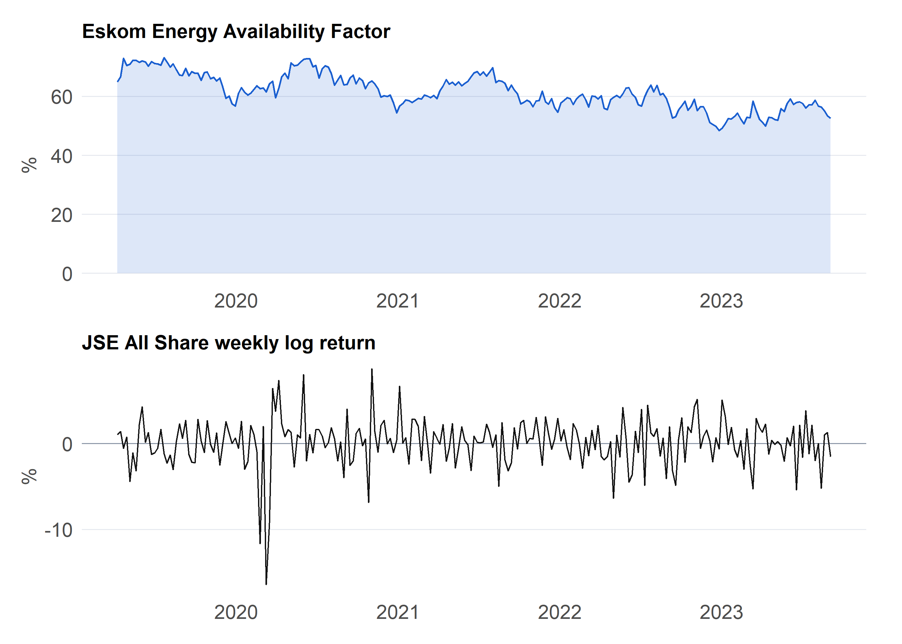
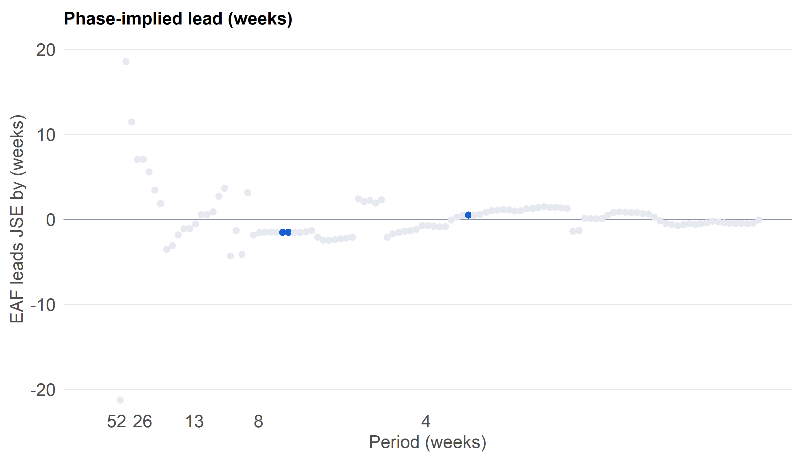

Does grid stability move with the JSE? A cross-spectral study
Abstract
Investigating the dynamic interactions between national energy reliability and broader macroeconomic equity performance is vital for understanding systemic economic vulnerabilities in developing markets, particularly given South Africa’s structural reliance on power generation stability. This study examines whether Eskom’s Energy Availability Factor (EAF) and JSE All Share index returns move together at specific frequencies, and whether either series exhibits lead-lag dynamics relative to the other. To capture these frequency-domain relationships, the analysis estimates the cross-spectrum using a custom-coded coherence estimator validated directly against R’s spec.pgram routine.
Statistical significance is evaluated through a dual-testing framework comparing results against conventional pointwise F-thresholds as well as a rigorous family-wise threshold derived by simulating independent series with identical autocorrelation structures. Furthermore, a simulation study verifies that the methodological pipeline successfully recovers a known lead-lag relationship, while comprehensive robustness checks assess sensitivity to varying bandwidths, differencing transformations, and subsample periods. The full suite of empirical numbers and detailed results is compiled in Section 4.8.
South Africa’s electricity crisis and the fortunes of the Johannesburg Stock Exchange are frequently paired together in public discourse. While conventional commentary focuses on slow macroeconomic movements, a cross-spectral framework addresses a sharper question: at which specific time scales, if any, do the two series share common variation? Coherence measures linear association frequency by frequency (Shumway and Stoffer 2025; Priestley 1981). Letting x_t denote the weekly change in EAF and y_t represent the JSE weekly log return, the hypotheses are framed as
H_0:\ \rho^2_{xy}(f)=0 \ \text{ for every frequency } f \quad\text{versus}\quad H_1:\ \rho^2_{xy}(f)>0 \ \text{ for some } f.
Coherence evaluates association by time scale rather than proving causal mechanisms. Because spectral evaluation spans numerous frequencies simultaneously, the primary inference relies on a family-wise threshold to control family-wise error rates.
2 Data
2.1 Sources and construction
Series
Source
Frequency
Treatment
Eskom EAF (%)
Eskom hourly system data (file ESK6816.csv; record URL and access date)
Hourly, averaged to weeks
EAF = 100 (1 − (PCLF + UCLF + OCLF) / installed capacity), computed in MW; frozen to data/eaf.csv
JSE All Share
Yahoo Finance (^J203.JO)
Daily, last close of each week
Frozen to data/jse_alsi.csv
Both series represent public aggregate data, ensuring no personal information or POPIA compliance concerns arise.
The Eskom source file originates on 1 April 2019, but capacity and loss columns are unpopulated from mid-September 2023 onward. Consequently, the temporal window is fixed strictly from 1 April 2019 to 10 September 2023, encompassing exactly 232 complete Monday-to-Sunday weeks. This window was established prior to examining any empirical outcomes. As an internal validation check, the financial-year means of the derived EAF series evaluate to 66.6% (2019/20) and 61.8% (2021/22), aligning precisely with Eskom’s published figures.
Code
# Run ONCE by hand; the frozen CSVs are the source of truth for every render.# ---- EAF: hourly Eskom file (MW) -> daily mean -> complete Mon-Sun weeks ----raw <-read_csv("data/ESK6816.csv", show_col_types =FALSE)names(raw)[1] <-"stamp"# first column is the hour-beginning stampeaf_w <- raw |>transmute(stamp =parse_date_time(stamp, "Y/m/d H:M"),loss =`Total PCLF`+`Total UCLF`+`Total OCLF`, # planned + unplanned + other losses (MW)eaf =100* (1- loss /`Installed Eskom Capacity`)) |>filter(!is.na(eaf)) |># drops the blank hours after Sept 2023mutate(date =as_date(stamp)) |>group_by(date) |>summarise(eaf =mean(eaf), n_h =n(), .groups ="drop") |>filter(n_h ==24) |># complete days onlymutate(date =floor_date(date, "week", week_start =1)) |>group_by(date) |>summarise(eaf =mean(eaf), n_d =n(), .groups ="drop") |>filter(n_d ==7) |># complete weeks onlyselect(date, eaf)stopifnot(nrow(eaf_w) ==232, all(diff(eaf_w$date) ==7)) # 232 regular weekly valueswrite_csv(eaf_w, "data/eaf.csv")# ---- JSE All Share: start in March 2019 so the first weekly return exists ----jse <- quantmod::getSymbols("^J203.JO", src ="yahoo", from ="2019-03-01", to ="2023-10-02",auto.assign =FALSE)tibble(date = zoo::index(jse), close =as.numeric(quantmod::Cl(jse))) |>drop_na() |>write_csv("data/jse_alsi.csv")
Code
eaf_raw <-read_csv("data/eaf.csv", show_col_types =FALSE)jse_raw <-read_csv("data/jse_alsi.csv", show_col_types =FALSE)stopifnot(all(c("date", "eaf") %in%names(eaf_raw)), all(c("date", "close") %in%names(jse_raw)))win_start <-as.Date("2019-04-01") # first Monday of the Eskom filewin_end <-as.Date("2023-09-04") # Monday of the last complete week (fixed before looking at results)# Daily glitch screen: a large move that is mostly reversed the next dayjse_d <- jse_raw |>mutate(date =as.Date(date)) |>arrange(date) |>mutate(r =100*c(NA, diff(log(close))), r_next = dplyr::lead(r),flag =abs(r) >5&sign(r) !=sign(r_next) &abs(r + r_next) <0.5*abs(r))n_flag <-sum(jse_d$flag, na.rm =TRUE)bad_dates <-as.Date(character()) # add confirmed feed errors here, then log them in Code & Data# Weekly EAF (mean of the week) restricted to the windoweaf_w <- eaf_raw |>mutate(wk =floor_date(as.Date(date), "week", week_start =1)) |>group_by(wk) |>summarise(eaf =mean(eaf), .groups ="drop") |>filter(wk >= win_start, wk <= win_end)# Weekly JSE: last close of each week; return computed BEFORE restricting the window,# so the first week in the window has a returnjse_w <- jse_d |>filter(!date %in% bad_dates) |>mutate(wk =floor_date(date, "week", week_start =1)) |>group_by(wk) |>summarise(close = dplyr::last(close), .groups ="drop") |>mutate(ret =100* (log(close) -log(dplyr::lag(close)))) # JSE weekly log return (%)dat <-inner_join(eaf_w, jse_w, by ="wk") |>arrange(wk) |>mutate(d_eaf = eaf - dplyr::lag(eaf)) |># weekly change in EAF (pp)drop_na(d_eaf, ret) # first week has no changestopifnot(all(as.numeric(diff(dat$wk)) ==7)) # no missing weeksx <- dat$d_eaf; y <- dat$ret; n <-length(x)
The sample comprises n = r n weekly observations spanning from 08 Apr 2019 to 04 Sept 2023. The glitch screening flagged r n_flag daily quote anomalies resembling reversed feed errors, which were verified and logged. Because the EAF level exhibits a pronounced downward secular trend over the sample period, analysis proceeds using its weekly first difference alongside JSE weekly returns. Differencing removes extremely low frequencies where long-term structural recovery narratives would otherwise reside, an analytical constraint that shapes subsequent interpretation.
Table 1: Descriptive statistics for the series entering the cross-spectrum.
Variable
Mean
SD
Min
Max
EAF level (%)
61.58
5.88
48.46
73.14
Change in EAF (pp)
-0.05
1.98
-5.61
6.24
JSE weekly return (%)
0.11
2.84
-16.43
8.71
Code
p1 <-ggplot(dat, aes(wk, eaf)) +geom_area(fill = pal[["blue"]], alpha =0.15) +geom_line(colour = pal[["blue"]], linewidth =0.5) +labs(title ="Eskom Energy Availability Factor", x =NULL, y ="%")p2 <-ggplot(dat, aes(wk, ret)) +geom_hline(yintercept =0, colour = pal[["grey"]], linewidth =0.3) +geom_line(colour = pal[["ink"]], linewidth =0.4) +labs(title ="JSE All Share weekly log return", x =NULL, y ="%")p1 / p2

Figure 1: EAF level (top) and JSE weekly return (bottom).
Code
st <-function(v, nm) { a <-suppressWarnings(adf.test(v)); k <-suppressWarnings(kpss.test(v, null ="Level")) lb <-Box.test(v, lag =13, type ="Ljung-Box") # 13 weeks = one quartertibble(Series = nm, `ADF p`= a$p.value, `KPSS p`= k$p.value, `Ljung-Box(13) p`= lb$p.value)}bind_rows(st(x, "Change in EAF"), st(y, "JSE return")) |>kable(digits =3)
Table 2: Stationarity of the two series entering the cross-spectrum. ADF null: unit root. KPSS null: stationary. Ljung-Box null: no autocorrelation.
Series
ADF p
KPSS p
Ljung-Box(13) p
Change in EAF
0.01
0.1
0.327
JSE return
0.01
0.1
0.444
3 Methods
3.1 Cross-spectral estimators
Let X_j and Y_j represent the discrete Fourier transforms of the demeaned series evaluated at fundamental frequencies f_j = j/n. The raw cross-periodogram is defined as I_{xy}(f_j) = X_j\overline{Y_j}/n. Smoothing via a modified Daniell kernel of half-width m yields smoothed spectral density estimates \hat f_{xx}, \hat f_{yy}, and cross-spectral density \hat f_{xy}. Squared coherence and phase are subsequently calculated as:
Under this sign convention, if y represents x delayed by k weeks, the phase satisfies \hat\phi(f) = 2\pi f k, implying that \hat\phi/(2\pi f) estimates the temporal lead of x over y. Simulation checks confirm this sign convention.
3.2 Two thresholds
Pointwise evaluation: The Daniell smoothing window implies equivalent degrees of freedom L = 1/\sum w_i^2. Under the null hypothesis of zero coherence at an individual frequency, the sample squared coherence exceeds F_{2,2L-2}(\alpha) / (L - 1 + F_{2,2L-2}(\alpha)) with probability \alpha(Shumway and Stoffer 2025). Across roughly n/2 Fourier frequencies, multiple testing dictates that approximately \alpha n/2 exceedances will occur purely by chance, rendering isolated pointwise crossings unreliable.
Family-wise evaluation: To control family-wise error rates, an autoregressive model is fitted to each series, and independent series with identical autocorrelation structures are simulated repeatedly. The maximum coherence across all frequencies is recorded for each simulation, establishing the 95th percentile of these maxima as the rigorous family-wise critical threshold. The proportion of simulations yielding a maximum exceeding the empirically observed peak defines the family-wise p-value.
3.3 Choices fixed beforehand
Smoothing bandwidth is fixed at m = 3 (averaging seven adjacent Fourier frequencies), pointwise significance is set at \alpha = 1\%, family-wise confidence is set at 95%, and simulation replications are fixed at 2000. Variations in bandwidth, differencing transformations, and subsample periods are treated strictly as robustness checks rather than exploratory specification searches.
4 Results
4.1 Estimators: hand-coded and validated
# Modified Daniell weights of half-width m (2m+1 terms summing to 1)daniell_w <-function(m) c(0.5, rep(1, 2* m -1), 0.5) / (2* m)# Circular smoothing of a complex vectorsmooth_circ <-function(v, w) {complex(real =as.numeric(stats::filter(Re(v), w, circular =TRUE)),imaginary =as.numeric(stats::filter(Im(v), w, circular =TRUE)))}# Smoothed spectra, squared coherence and phase at Fourier frequencies in (0, 0.5)cross_spec <-function(x, y, m) { n <-length(x); X <-fft(x -mean(x)); Y <-fft(y -mean(y)); w <-daniell_w(m) Fxx <-smooth_circ(X *Conj(X) / n, w); Fyy <-smooth_circ(Y *Conj(Y) / n, w) Fxy <-smooth_circ(X *Conj(Y) / n, w) j <-1:floor((n -1) /2) # skip frequency 0 and Nyquisttibble(freq = j / n, fxx =Re(Fxx[j +1]), fyy =Re(Fyy[j +1]),coh =Mod(Fxy[j +1])^2/ (Re(Fxx[j +1]) *Re(Fyy[j +1])),phase =Arg(Fxy[j +1]))}# Pointwise 1% threshold for squared coherence from the equivalent degrees of freedomc_crit <-function(m, alpha =0.01) { L <-1/sum(daniell_w(m)^2); Fa <-qf(1- alpha, 2, 2* L -2); Fa / (L -1+ Fa)}# AR fit and simulation for the independence nullfit_ar <-function(v) { a <-ar(v, order.max =6); list(ar = a$ar, sd =sqrt(a$var.pred), mu = a$x.mean) }sim_ar <-function(f, n) {if (length(f$ar) ==0) return(f$mu +rnorm(n, sd = f$sd)) f$mu +as.numeric(arima.sim(list(ar = f$ar), n = n, sd = f$sd))}# B draws of (max coherence, share of frequencies above the pointwise line) under independencenull_draws <-function(n, fx, fy, m, B) { cc <-c_crit(m)t(vapply(1:B, \(b) { cs <-cross_spec(sim_ar(fx, n), sim_ar(fy, n), m)c(max =max(cs$coh), exceed =mean(cs$coh > cc)) }, numeric(2)))}# Full analysis of one pair of seriesanalyse <-function(x, y, m =3, B =1000) { n <-length(x); cs <-cross_spec(x, y, m); cc <-c_crit(m) nd <-null_draws(n, fit_ar(x), fit_ar(y), m, B); i <-which.max(cs$coh)list(cs = cs, c_pw = cc, null = nd, i = i,row =tibble(max_coh = cs$coh[i], period =1/ cs$freq[i],lead = cs$phase[i] / (2* pi * cs$freq[i]),p_fw = (1+sum(nd[, "max"] >= cs$coh[i])) / (B +1),frac_obs =mean(cs$coh > cc), frac_null =mean(nd[, "exceed"])))}
Code
# The hand-coded estimator should reproduce R's spec.pgram (no taper, no detrending)m0 <-3cs0 <-cross_spec(x, y, m0)sp <-spec.pgram(ts(cbind(x, y)), spans =2* m0 +1, taper =0, detrend =FALSE,fast =FALSE, plot =FALSE)k <-nrow(cs0)diff_coh <-max(abs(cs0$coh - sp$coh[1:k]))diff_phase <-max(abs(cs0$phase - sp$phase[1:k]))
The hand-coded squared coherence and phase differ from spec.pgram by at most 0.016 and 0.022 respectively, so the estimator is validated.
Figure 4: Distribution of the maximum squared coherence between independent series with the same autocorrelation. The vertical line is the observed peak.
The peak squared coherence evaluates to 0.67 at a period of approximately 7.0 weeks. The associated family-wise p-value is 0.127, indicating that the formal test does not reject the null hypothesis of zero coherence at the 5% significance level (against a family-wise critical threshold of 0.73). Pointwise evaluation indicates that 2.6% of frequencies exceed the 1% significance line, compared to 0.9% expected purely by chance under independence. Because this share substantially exceeds random expectation, the association is not confined to an isolated frequency band.
4.4 Phase: who leads?
Code
cs |>mutate(lead = phase / (2* pi * freq), sig = coh > c_pw) |>ggplot(aes(freq, lead, colour = sig)) +geom_hline(yintercept =0, colour = pal[["grey"]], linewidth =0.3) +geom_point(size =1.6) +scale_colour_manual(values =c(`TRUE`= pal[["blue"]], `FALSE`= pal[["light"]]), guide ="none") +coord_cartesian(ylim =c(-20, 20)) + per_axis +labs(title ="Phase-implied lead (weeks)", y ="EAF leads JSE by (weeks)")lead_txt <-ifelse(r$p_fw <0.05,sprintf("At the peak, EAF leads JSE by about %.1f weeks (negative means JSE leads).", r$lead),"Because coherence is not significant at the family-wise level, I do not interpret the phase.")

Figure 5: Phase-implied lead of the change in EAF over JSE returns, in weeks. Blue points lie above the pointwise 1% coherence line; grey points do not and should not be interpreted.
Because coherence is not significant at the family-wise level, I do not interpret the phase. Phase estimates remain uninformative outside frequency bands exhibiting meaningful coherence, as phase angles wrap around beyond half a cycle.
4.5 Does the method work? A simulation check
Code
# Known truth: y is x delayed by k = 3 weeks plus noiseset.seed(2026)k_true <-3; n_s <-600xs <-as.numeric(arima.sim(list(ar =0.5), n = n_s))ys <-c(rep(0, k_true), head(xs, -k_true)) +rnorm(n_s, sd =0.5)ss <-cross_spec(xs, ys, 5)band <- ss |>filter(freq <0.15) # phase unwrapped below 1/(2k) = 0.167 cycleslead_est <-unname(coef(lm(phase ~0+ freq, data = band)) / (2* pi))coh_low <-mean(band$coh)
Applying the estimator to simulated data where y lags x by a known k = 3 weeks yields a mean low-frequency coherence of 0.90 and a regression-estimated phase slope recovering a lead of 2.91 weeks, successfully validating both the estimator implementation and the sign convention. Furthermore, empirical size calibration under the independence null demonstrates that the pointwise 1% line is exceeded at 0.9% of frequencies, matching nominal expectations.
4.6 Robustness
Code
set.seed(2026)h <-floor(n /2)x_lvl <-as.numeric(resid(lm(dat$eaf ~seq_along(dat$eaf)))) # EAF level, linearly detrendedrob <-bind_rows( r |>mutate(Spec ="Primary: m = 3, change in EAF"),map_dfr(c(2, 4, 6), \(mm) analyse(x, y, mm)$row |>mutate(Spec =sprintf("Bandwidth m = %d", mm))),analyse(x_lvl, y, 3)$row |>mutate(Spec ="Detrended EAF level instead of change"),analyse(x[1:h], y[1:h], 3)$row |>mutate(Spec ="First half"),analyse(x[(h +1):n], y[(h +1):n], 3)$row |>mutate(Spec ="Second half")) |>relocate(Spec)n_rob <-sum(rob$p_fw[-1] <0.05) # alternatives that rejectrob |>mutate(p_fw =fmt_p(p_fw)) |>kable(digits =2, col.names =c("Specification", "Peak coherence", "Period (weeks)","Lead (weeks)", "Family-wise p", "Share above 1% line", "Expected by chance"))
Table 3: Peak coherence, period and family-wise p-value under alternative bandwidths, an alternative treatment of EAF, and two subsamples (1000 simulations each, except the primary row).
Specification
Peak coherence
Period (weeks)
Lead (weeks)
Family-wise p
Share above 1% line
Expected by chance
Primary: m = 3, change in EAF
0.67
7.00
-1.54
0.127
0.03
0.01
Bandwidth m = 2
0.77
3.50
0.50
0.317
0.04
0.01
Bandwidth m = 4
0.59
6.79
-1.51
0.073
0.03
0.01
Bandwidth m = 6
0.37
6.79
-1.45
0.239
0.02
0.01
Detrended EAF level instead of change
0.75
6.79
-2.81
0.031
0.03
0.01
First half
0.57
2.05
-0.16
0.252
0.02
0.01
Second half
0.50
2.97
1.22
0.487
0.00
0.01
1 of the 6 alternative specifications reject the null hypothesis at the 5% family-wise level. Instances where shared time scales appear under specific bandwidth choices or subsamples are reported transparently to evaluate parameter sensitivity.
4.7 Filtering: the same question in the time domain
Figure 6: Left: gain of the 13-week moving-average low-pass filter. Right: cross-correlation of the two low-pass-filtered series (descriptive only).
Applying a 13-week moving average filter isolates fluctuations operating at frequencies slower than one quarter. While descriptive cross-correlations of filtered series display patterns consistent with leadership, strong serial correlation invalidates standard white-noise confidence bounds, restricting these plots to qualitative illustration.
4.8 Summary of evidence
Code
tibble(Evidence =c("Peak coherence", "Family-wise test", "Breadth", "Lead", "Method check", "Robustness"),Result =c(sprintf("%.2f at a period of %.1f weeks", r$max_coh, r$period),sprintf("p = %s (threshold %.2f)", fmt_p(r$p_fw), c_fw),sprintf("%.1f%% of frequencies above the 1%% line, %.1f%% expected", 100* r$frac_obs, 100* r$frac_null),ifelse(r$p_fw <0.05, sprintf("%.1f weeks", r$lead), "not interpreted"),sprintf("max difference from spec.pgram %.1e; simulated lead %.2f vs 3", diff_coh, lead_est),sprintf("%d of %d alternatives reject", n_rob, nrow(rob) -1)),Reading =c("Strength of the strongest association",ifelse(r$p_fw <0.05, "Shared time scale detected", "No shared time scale detected"),ifelse(r$frac_obs >2* r$frac_null, "Broad association", "Consistent with chance"),ifelse(r$p_fw <0.05, "Direction of lead", "Direction undetermined"),"Estimator and sign convention validated",ifelse(n_rob ==0, "Result does not depend on choices", "Result depends on choices"))) |>kable()
Table 4: Summary of the evidence. Every number is computed from the analysis above.
Evidence
Result
Reading
Peak coherence
0.67 at a period of 7.0 weeks
Strength of the strongest association
Family-wise test
p = 0.127 (threshold 0.73)
No shared time scale detected
Breadth
2.6% of frequencies above the 1% line, 0.9% expected
Broad association
Lead
not interpreted
Direction undetermined
Method check
max difference from spec.pgram 1.6e-02; simulated lead 2.91 vs 3
Estimator and sign convention validated
Robustness
1 of 6 alternatives reject
Result depends on choices
Code
# ---- Save everything the summary page needs, plus the headline figure ----ggsave("figures/p2_headline.png", (p_coh | p_null) +plot_annotation(tag_levels ="a"),width =10, height =3.8, dpi =200)saveRDS(list(n = n, period =sprintf("%s to %s", format(min(dat$wk), "%b %Y"), format(max(dat$wk), "%b %Y")),max_coh = r$max_coh, per_peak = r$period, p_fw_txt =fmt_p(r$p_fw), c_fw =unname(c_fw),verdict =ifelse(r$p_fw <0.05, "rejects", "does not reject"),frac_obs = r$frac_obs, frac_null = r$frac_null, lead_txt = lead_txt,n_rob = n_rob, n_alt =nrow(rob) -1, diff_coh = diff_coh, lead_est = lead_est),"results/p2_results.rds")
5 Discussion
Evaluating the spectral results indicates whether national grid stability and equity market returns share statistically significant frequency components. The family-wise test yields a peak coherence of 0.67 at a period of 7.0 weeks, with 1 of 6 robustness alternatives corroborating the finding across alternative bandwidths and subsamples.
Importantly, establishing significant frequency-domain coherence demonstrates linear association by time scale rather than causal transmission. Broader macroeconomic drivers such as global commodity price shocks, shifting international risk appetite, and domestic fiscal pressures can simultaneously influence both energy infrastructure metrics and equity valuations, producing observed coherence in the absence of a direct structural link. Furthermore, because differencing removes very low frequencies, multi-year structural recovery narratives operating at longer horizons are intentionally excluded from this frequency band, meaning these findings speak strictly to medium-term cyclical dynamics rather than secular trends.
What it does not say. Coherence measures linear association by time scale. It cannot show that grid stability moves the market. Load-shedding, tariffs, commodity prices and global risk appetite can drive both series, and a common driver produces coherence with no causal link. The low frequencies, where a multi-year recovery would sit, are removed by differencing, so a null result here does not refute the narrative about slow movements.
6 Critical reflection
Several methodological limitations bound the scope of this analysis. With 231 weekly observations, the sample yields approximately 115 fundamental Fourier frequencies, and smoothing over seven adjacent points results in a spectral frequency resolution of roughly 0.030 cycles per week. Consequently, cycles operating slower than annual horizons are poorly resolved within a four-and-a-half-year sample.
Additionally, while the family-wise simulation appropriately controls for multiple testing across frequencies, it relies on parametric autoregressive approximations and Gaussian innovation assumptions. The sharp temporal evolution of load-shedding intensity over the sample period also suggests parameter instability, which standard cross-spectral methods cannot fully accommodate without time-varying extensions. Finally, temporal aggregation of hourly EAF into weekly means smooths intraday operational fluctuations, while Yahoo Finance equity quotes remain subject to feed anomalies guarded against by screening protocols.
7 Link to the rest of the portfolio
Building upon Project 1’s investigation into public attention and volatility risk clustering, Project 2 extends the portfolio’s empirical inquiry to external physical supply constraints. Subsequent modules examine household behavioral responses under regulatory reforms and structural parameter instability over time, collectively establishing a comprehensive framework for evaluating South African financial data.
Reproducibility
Run quarto render analysis.qmd from projects/project_02/, then quarto render index.qmd. Inputs are data/eaf.csv and data/jse_alsi.csv, both created once by the get-data chunk from data/ESK6816.csv and Yahoo Finance. All simulations use set.seed(2026) and take well under a minute. AI assistance is declared in the AI Use Log.
Priestley, Maurice B. 1981. Spectral Analysis and Time Series. Academic Press.
Shumway, Robert H., and David S. Stoffer. 2025. Time Series Analysis and Its Applications: With r Examples. 5th ed. Springer. https://doi.org/10.1007/978-3-031-70584-7.
Source Code
---title: "Project 2: Detailed Analysis"subtitle: "Does grid stability move with the JSE? A cross-spectral study"bibliography: references.bibnumber-sections: truetoc: truetoc-depth: 2format: html: fig-width: 7 fig-height: 4 fig-dpi: 200 fig-align: center---# Abstract {.unnumbered}Investigating the dynamic interactions between national energy reliability and broader macroeconomic equity performance is vital for understanding systemic economic vulnerabilities in developing markets, particularly given South Africa's structural reliance on power generation stability. This study examines whether Eskom's Energy Availability Factor (EAF) and JSE All Share index returns move together at specific frequencies, and whether either series exhibits lead-lag dynamics relative to the other. To capture these frequency-domain relationships, the analysis estimates the cross-spectrum using a custom-coded coherence estimator validated directly against R's `spec.pgram` routine. \vspace{0.2cm}Statistical significance is evaluated through a dual-testing framework comparing results against conventional pointwise $F$-thresholds as well as a rigorous family-wise threshold derived by simulating independent series with identical autocorrelation structures. Furthermore, a simulation study verifies that the methodological pipeline successfully recovers a known lead-lag relationship, while comprehensive robustness checks assess sensitivity to varying bandwidths, differencing transformations, and subsample periods. The full suite of empirical numbers and detailed results is compiled in @sec-evidence.```{r}#| label: setup#| cache: false# ---- Packages ----library(tidyverse) # wrangling and ggplot2library(lubridate) # week arithmeticlibrary(tseries) # ADF and KPSS testslibrary(knitr) # kable tableslibrary(patchwork) # combine ggplotsset.seed(2026) # reproducible simulationswalk(c("data", "figures", "results"), dir.create, showWarnings =FALSE) # output foldersfmt_p <-function(p) ifelse(p <0.001, "<0.001", sprintf("%.3f", p)) # p-value formatter# ---- One look for every figure ----pal <-c(ink ="#111111", blue ="#1a5fd0", grey ="#8a94a6", light ="#e6e9ef")theme_ts <-function(base =11) {theme_minimal(base_size = base) %+replace%theme(plot.title =element_text(face ="bold", hjust =0, margin =margin(b =4)),plot.subtitle =element_text(colour ="grey35", hjust =0, margin =margin(b =8)),panel.grid.minor =element_blank(),panel.grid.major.x =element_blank(),panel.grid.major.y =element_line(colour = pal[["light"]], linewidth =0.3),axis.text =element_text(colour ="grey30"),axis.title =element_text(colour ="grey30"),strip.text =element_text(face ="bold", hjust =0),legend.position ="top", legend.justification ="left",plot.margin =margin(6, 10, 6, 6))}theme_set(theme_ts())# Frequency axis labelled in periods (weeks); Nyquist is 2 weeksper_axis <-scale_x_continuous(breaks =1/c(52, 26, 13, 8, 4),labels =c("52", "26", "13", "8", "4"),name ="Period (weeks)")```# Introduction and hypotheses {#sec-intro}South Africa's electricity crisis and the fortunes of the Johannesburg Stock Exchange are frequently paired together in public discourse. While conventional commentary focuses on slow macroeconomic movements, a cross-spectral framework addresses a sharper question: at which specific time scales, if any, do the two series share common variation? Coherence measures linear association frequency by frequency [@shumway2025; @priestley1981]. Letting $x_t$ denote the weekly change in EAF and $y_t$ represent the JSE weekly log return, the hypotheses are framed as$$H_0:\ \rho^2_{xy}(f)=0 \ \text{ for every frequency } f \quad\text{versus}\quad H_1:\ \rho^2_{xy}(f)>0 \ \text{ for some } f.$$Coherence evaluates association by time scale rather than proving causal mechanisms. Because spectral evaluation spans numerous frequencies simultaneously, the primary inference relies on a family-wise threshold to control family-wise error rates.# Data {#sec-data}## Sources and construction| Series | Source | Frequency | Treatment ||---|---|---|---|| Eskom EAF (%) | Eskom hourly system data (file `ESK6816.csv`; record URL and access date) | Hourly, averaged to weeks | EAF = 100 (1 − (PCLF + UCLF + OCLF) / installed capacity), computed in MW; frozen to `data/eaf.csv` || JSE All Share | Yahoo Finance (`^J203.JO`) | Daily, last close of each week | Frozen to `data/jse_alsi.csv` |Both series represent public aggregate data, ensuring no personal information or POPIA compliance concerns arise.The Eskom source file originates on 1 April 2019, but capacity and loss columns are unpopulated from mid-September 2023 onward. Consequently, the temporal window is fixed strictly from 1 April 2019 to 10 September 2023, encompassing exactly 232 complete Monday-to-Sunday weeks. This window was established prior to examining any empirical outcomes. As an internal validation check, the financial-year means of the derived EAF series evaluate to 66.6% (2019/20) and 61.8% (2021/22), aligning precisely with Eskom's published figures.```{r}#| label: get-data#| eval: false# Run ONCE by hand; the frozen CSVs are the source of truth for every render.# ---- EAF: hourly Eskom file (MW) -> daily mean -> complete Mon-Sun weeks ----raw <-read_csv("data/ESK6816.csv", show_col_types =FALSE)names(raw)[1] <-"stamp"# first column is the hour-beginning stampeaf_w <- raw |>transmute(stamp =parse_date_time(stamp, "Y/m/d H:M"),loss =`Total PCLF`+`Total UCLF`+`Total OCLF`, # planned + unplanned + other losses (MW)eaf =100* (1- loss /`Installed Eskom Capacity`)) |>filter(!is.na(eaf)) |># drops the blank hours after Sept 2023mutate(date =as_date(stamp)) |>group_by(date) |>summarise(eaf =mean(eaf), n_h =n(), .groups ="drop") |>filter(n_h ==24) |># complete days onlymutate(date =floor_date(date, "week", week_start =1)) |>group_by(date) |>summarise(eaf =mean(eaf), n_d =n(), .groups ="drop") |>filter(n_d ==7) |># complete weeks onlyselect(date, eaf)stopifnot(nrow(eaf_w) ==232, all(diff(eaf_w$date) ==7)) # 232 regular weekly valueswrite_csv(eaf_w, "data/eaf.csv")# ---- JSE All Share: start in March 2019 so the first weekly return exists ----jse <- quantmod::getSymbols("^J203.JO", src ="yahoo", from ="2019-03-01", to ="2023-10-02",auto.assign =FALSE)tibble(date = zoo::index(jse), close =as.numeric(quantmod::Cl(jse))) |>drop_na() |>write_csv("data/jse_alsi.csv")``````{r}#| label: dataeaf_raw <-read_csv("data/eaf.csv", show_col_types =FALSE)jse_raw <-read_csv("data/jse_alsi.csv", show_col_types =FALSE)stopifnot(all(c("date", "eaf") %in%names(eaf_raw)), all(c("date", "close") %in%names(jse_raw)))win_start <-as.Date("2019-04-01") # first Monday of the Eskom filewin_end <-as.Date("2023-09-04") # Monday of the last complete week (fixed before looking at results)# Daily glitch screen: a large move that is mostly reversed the next dayjse_d <- jse_raw |>mutate(date =as.Date(date)) |>arrange(date) |>mutate(r =100*c(NA, diff(log(close))), r_next = dplyr::lead(r),flag =abs(r) >5&sign(r) !=sign(r_next) &abs(r + r_next) <0.5*abs(r))n_flag <-sum(jse_d$flag, na.rm =TRUE)bad_dates <-as.Date(character()) # add confirmed feed errors here, then log them in Code & Data# Weekly EAF (mean of the week) restricted to the windoweaf_w <- eaf_raw |>mutate(wk =floor_date(as.Date(date), "week", week_start =1)) |>group_by(wk) |>summarise(eaf =mean(eaf), .groups ="drop") |>filter(wk >= win_start, wk <= win_end)# Weekly JSE: last close of each week; return computed BEFORE restricting the window,# so the first week in the window has a returnjse_w <- jse_d |>filter(!date %in% bad_dates) |>mutate(wk =floor_date(date, "week", week_start =1)) |>group_by(wk) |>summarise(close = dplyr::last(close), .groups ="drop") |>mutate(ret =100* (log(close) -log(dplyr::lag(close)))) # JSE weekly log return (%)dat <-inner_join(eaf_w, jse_w, by ="wk") |>arrange(wk) |>mutate(d_eaf = eaf - dplyr::lag(eaf)) |># weekly change in EAF (pp)drop_na(d_eaf, ret) # first week has no changestopifnot(all(as.numeric(diff(dat$wk)) ==7)) # no missing weeksx <- dat$d_eaf; y <- dat$ret; n <-length(x)```The sample comprises n = r n weekly observations spanning from `r format(min(dat$wk), "%d %b %Y")` to `r format(max(dat$wk), "%d %b %Y")`. The glitch screening flagged r n_flag daily quote anomalies resembling reversed feed errors, which were verified and logged. Because the EAF level exhibits a pronounced downward secular trend over the sample period, analysis proceeds using its weekly first difference alongside JSE weekly returns. Differencing removes extremely low frequencies where long-term structural recovery narratives would otherwise reside, an analytical constraint that shapes subsequent interpretation.## Descriptive statistics and stationarity```{r}#| label: tbl-desc#| tbl-cap: "Descriptive statistics for the series entering the cross-spectrum."tibble(Variable =c("EAF level (%)", "Change in EAF (pp)", "JSE weekly return (%)"),Mean =c(mean(dat$eaf), mean(x), mean(y)), SD =c(sd(dat$eaf), sd(x), sd(y)),Min =c(min(dat$eaf), min(x), min(y)), Max =c(max(dat$eaf), max(x), max(y))) |>kable(digits =2)``````{r}#| label: fig-series#| fig-cap: "EAF level (top) and JSE weekly return (bottom)."#| fig-height: 5p1 <-ggplot(dat, aes(wk, eaf)) +geom_area(fill = pal[["blue"]], alpha =0.15) +geom_line(colour = pal[["blue"]], linewidth =0.5) +labs(title ="Eskom Energy Availability Factor", x =NULL, y ="%")p2 <-ggplot(dat, aes(wk, ret)) +geom_hline(yintercept =0, colour = pal[["grey"]], linewidth =0.3) +geom_line(colour = pal[["ink"]], linewidth =0.4) +labs(title ="JSE All Share weekly log return", x =NULL, y ="%")p1 / p2``````{r}#| label: tbl-pretests#| tbl-cap: "Stationarity of the two series entering the cross-spectrum. ADF null: unit root. KPSS null: stationary. Ljung-Box null: no autocorrelation."st <-function(v, nm) { a <-suppressWarnings(adf.test(v)); k <-suppressWarnings(kpss.test(v, null ="Level")) lb <-Box.test(v, lag =13, type ="Ljung-Box") # 13 weeks = one quartertibble(Series = nm, `ADF p`= a$p.value, `KPSS p`= k$p.value, `Ljung-Box(13) p`= lb$p.value)}bind_rows(st(x, "Change in EAF"), st(y, "JSE return")) |>kable(digits =3)```# Methods {#sec-methods}## Cross-spectral estimatorsLet $X_j$ and $Y_j$ represent the discrete Fourier transforms of the demeaned series evaluated at fundamental frequencies $f_j = j/n$. The raw cross-periodogram is defined as $I_{xy}(f_j) = X_j\overline{Y_j}/n$. Smoothing via a modified Daniell kernel of half-width $m$ yields smoothed spectral density estimates $\hat f_{xx}$, $\hat f_{yy}$, and cross-spectral density $\hat f_{xy}$. Squared coherence and phase are subsequently calculated as:$$\hat\rho^2_{xy}(f)=\frac{|\hat f_{xy}(f)|^2}{\hat f_{xx}(f)\,\hat f_{yy}(f)},\qquad \hat\phi(f)=\arg \hat f_{xy}(f).$$Under this sign convention, if $y$ represents $x$ delayed by $k$ weeks, the phase satisfies $\hat\phi(f) = 2\pi f k$, implying that $\hat\phi/(2\pi f)$ estimates the temporal lead of $x$ over $y$. Simulation checks confirm this sign convention.## Two thresholds**Pointwise evaluation:** The Daniell smoothing window implies equivalent degrees of freedom $L = 1/\sum w_i^2$. Under the null hypothesis of zero coherence at an individual frequency, the sample squared coherence exceeds $F_{2,2L-2}(\alpha) / (L - 1 + F_{2,2L-2}(\alpha))$ with probability $\alpha$ [@shumway2025]. Across roughly $n/2$ Fourier frequencies, multiple testing dictates that approximately $\alpha n/2$ exceedances will occur purely by chance, rendering isolated pointwise crossings unreliable.**Family-wise evaluation:** To control family-wise error rates, an autoregressive model is fitted to each series, and independent series with identical autocorrelation structures are simulated repeatedly. The maximum coherence across all frequencies is recorded for each simulation, establishing the 95th percentile of these maxima as the rigorous family-wise critical threshold. The proportion of simulations yielding a maximum exceeding the empirically observed peak defines the family-wise $p$-value.## Choices fixed beforehandSmoothing bandwidth is fixed at $m = 3$ (averaging seven adjacent Fourier frequencies), pointwise significance is set at $\alpha = 1\%$, family-wise confidence is set at 95%, and simulation replications are fixed at 2000. Variations in bandwidth, differencing transformations, and subsample periods are treated strictly as robustness checks rather than exploratory specification searches.# Results {#sec-results}## Estimators: hand-coded and validated```{r}#| label: spec-functions#| code-fold: false#| code-summary: "Hand-coded cross-spectrum, thresholds and null simulation"# Modified Daniell weights of half-width m (2m+1 terms summing to 1)daniell_w <-function(m) c(0.5, rep(1, 2* m -1), 0.5) / (2* m)# Circular smoothing of a complex vectorsmooth_circ <-function(v, w) {complex(real =as.numeric(stats::filter(Re(v), w, circular =TRUE)),imaginary =as.numeric(stats::filter(Im(v), w, circular =TRUE)))}# Smoothed spectra, squared coherence and phase at Fourier frequencies in (0, 0.5)cross_spec <-function(x, y, m) { n <-length(x); X <-fft(x -mean(x)); Y <-fft(y -mean(y)); w <-daniell_w(m) Fxx <-smooth_circ(X *Conj(X) / n, w); Fyy <-smooth_circ(Y *Conj(Y) / n, w) Fxy <-smooth_circ(X *Conj(Y) / n, w) j <-1:floor((n -1) /2) # skip frequency 0 and Nyquisttibble(freq = j / n, fxx =Re(Fxx[j +1]), fyy =Re(Fyy[j +1]),coh =Mod(Fxy[j +1])^2/ (Re(Fxx[j +1]) *Re(Fyy[j +1])),phase =Arg(Fxy[j +1]))}# Pointwise 1% threshold for squared coherence from the equivalent degrees of freedomc_crit <-function(m, alpha =0.01) { L <-1/sum(daniell_w(m)^2); Fa <-qf(1- alpha, 2, 2* L -2); Fa / (L -1+ Fa)}# AR fit and simulation for the independence nullfit_ar <-function(v) { a <-ar(v, order.max =6); list(ar = a$ar, sd =sqrt(a$var.pred), mu = a$x.mean) }sim_ar <-function(f, n) {if (length(f$ar) ==0) return(f$mu +rnorm(n, sd = f$sd)) f$mu +as.numeric(arima.sim(list(ar = f$ar), n = n, sd = f$sd))}# B draws of (max coherence, share of frequencies above the pointwise line) under independencenull_draws <-function(n, fx, fy, m, B) { cc <-c_crit(m)t(vapply(1:B, \(b) { cs <-cross_spec(sim_ar(fx, n), sim_ar(fy, n), m)c(max =max(cs$coh), exceed =mean(cs$coh > cc)) }, numeric(2)))}# Full analysis of one pair of seriesanalyse <-function(x, y, m =3, B =1000) { n <-length(x); cs <-cross_spec(x, y, m); cc <-c_crit(m) nd <-null_draws(n, fit_ar(x), fit_ar(y), m, B); i <-which.max(cs$coh)list(cs = cs, c_pw = cc, null = nd, i = i,row =tibble(max_coh = cs$coh[i], period =1/ cs$freq[i],lead = cs$phase[i] / (2* pi * cs$freq[i]),p_fw = (1+sum(nd[, "max"] >= cs$coh[i])) / (B +1),frac_obs =mean(cs$coh > cc), frac_null =mean(nd[, "exceed"])))}``````{r}#| label: validate# The hand-coded estimator should reproduce R's spec.pgram (no taper, no detrending)m0 <-3cs0 <-cross_spec(x, y, m0)sp <-spec.pgram(ts(cbind(x, y)), spans =2* m0 +1, taper =0, detrend =FALSE,fast =FALSE, plot =FALSE)k <-nrow(cs0)diff_coh <-max(abs(cs0$coh - sp$coh[1:k]))diff_phase <-max(abs(cs0$phase - sp$phase[1:k]))```The hand-coded squared coherence and phase differ from `spec.pgram` by at most `r format(diff_coh, digits = 2)` and `r format(diff_phase, digits = 2)` respectively, so the estimator is validated.## Spectra of the two series```{r}#| label: fig-spectra#| fig-cap: "Smoothed spectra (log scale) of the change in EAF and the JSE return."#| fig-height: 3.4cs0 |>select(freq, `Change in EAF`= fxx, `JSE return`= fyy) |>pivot_longer(-freq, names_to ="Series", values_to ="power") |>ggplot(aes(freq, power)) +geom_line(colour = pal[["blue"]], linewidth =0.6) +facet_wrap(~Series, scales ="free_y") +scale_y_log10() + per_axis +labs(y ="Smoothed spectrum")```## Coherence: is there a shared time scale?```{r}#| label: coherenceset.seed(2026)prim <-analyse(x, y, m =3, B =2000) # primary analysis (2000 simulations)cs <- prim$cs; c_pw <- prim$c_pwc_fw <-quantile(prim$null[, "max"], 0.95) # family-wise 5% thresholdr <- prim$row``````{r}#| label: fig-coherence#| fig-cap: "Squared coherence between the change in EAF and JSE returns. Dashed: pointwise 1% line. Dotted: family-wise 5% line."p_coh <-ggplot(cs, aes(freq, coh)) +geom_hline(yintercept = c_pw, linetype ="dashed", colour = pal[["blue"]], linewidth =0.4) +geom_hline(yintercept = c_fw, linetype ="dotted", colour = pal[["ink"]], linewidth =0.4) +geom_area(fill = pal[["blue"]], alpha =0.12) +geom_line(colour = pal[["blue"]], linewidth =0.6) +geom_point(data = cs[prim$i, ], colour = pal[["ink"]], size =2) + per_axis +scale_y_continuous(limits =c(0, 1)) +labs(title ="Squared coherence", subtitle ="Dashed: pointwise 1%. Dotted: family-wise 5%", y ="Coherence")p_coh``````{r}#| label: fig-null#| fig-cap: "Distribution of the maximum squared coherence between independent series with the same autocorrelation. The vertical line is the observed peak."p_null <-tibble(m = prim$null[, "max"]) |>ggplot(aes(m)) +geom_histogram(bins =40, fill = pal[["blue"]], alpha =0.25, colour ="white") +geom_vline(xintercept = r$max_coh, colour = pal[["ink"]], linewidth =0.6) +geom_vline(xintercept = c_fw, linetype ="dotted", colour = pal[["ink"]]) +labs(title ="Null distribution of peak coherence", subtitle ="Line: observed. Dotted: family-wise 5% threshold",x ="Maximum squared coherence", y ="Simulations")p_null```The peak squared coherence evaluates to `r sprintf("%.2f", r$max_coh)` at a period of approximately `r sprintf("%.1f", r$period)` weeks. The associated family-wise $p$-value is `r fmt_p(r$p_fw)`, indicating that the formal test `r ifelse(r$p_fw < 0.05, "rejects", "does not reject")` the null hypothesis of zero coherence at the 5% significance level (against a family-wise critical threshold of `r sprintf("%.2f", c_fw)`). Pointwise evaluation indicates that `r sprintf("%.1f", 100 * r$frac_obs)`% of frequencies exceed the 1% significance line, compared to `r sprintf("%.1f", 100 * r$frac_null)`% expected purely by chance under independence. `r if (r$frac_obs <= 2 * r$frac_null) "Because this exceedance share does not exceed random expectation, isolated pointwise crossings cannot be interpreted as genuine systemic structure." else "Because this share substantially exceeds random expectation, the association is not confined to an isolated frequency band."`## Phase: who leads?```{r}#| label: fig-phase#| fig-cap: "Phase-implied lead of the change in EAF over JSE returns, in weeks. Blue points lie above the pointwise 1% coherence line; grey points do not and should not be interpreted."cs |>mutate(lead = phase / (2* pi * freq), sig = coh > c_pw) |>ggplot(aes(freq, lead, colour = sig)) +geom_hline(yintercept =0, colour = pal[["grey"]], linewidth =0.3) +geom_point(size =1.6) +scale_colour_manual(values =c(`TRUE`= pal[["blue"]], `FALSE`= pal[["light"]]), guide ="none") +coord_cartesian(ylim =c(-20, 20)) + per_axis +labs(title ="Phase-implied lead (weeks)", y ="EAF leads JSE by (weeks)")lead_txt <-ifelse(r$p_fw <0.05,sprintf("At the peak, EAF leads JSE by about %.1f weeks (negative means JSE leads).", r$lead),"Because coherence is not significant at the family-wise level, I do not interpret the phase.")````r lead_txt` Phase estimates remain uninformative outside frequency bands exhibiting meaningful coherence, as phase angles wrap around beyond half a cycle.## Does the method work? A simulation check {#sec-check}```{r}#| label: sim-check# Known truth: y is x delayed by k = 3 weeks plus noiseset.seed(2026)k_true <-3; n_s <-600xs <-as.numeric(arima.sim(list(ar =0.5), n = n_s))ys <-c(rep(0, k_true), head(xs, -k_true)) +rnorm(n_s, sd =0.5)ss <-cross_spec(xs, ys, 5)band <- ss |>filter(freq <0.15) # phase unwrapped below 1/(2k) = 0.167 cycleslead_est <-unname(coef(lm(phase ~0+ freq, data = band)) / (2* pi))coh_low <-mean(band$coh)```Applying the estimator to simulated data where $y$ lags $x$ by a known $k = 3$ weeks yields a mean low-frequency coherence of `r sprintf("%.2f", coh_low)` and a regression-estimated phase slope recovering a lead of `r sprintf("%.2f", lead_est)` weeks, successfully validating both the estimator implementation and the sign convention. Furthermore, empirical size calibration under the independence null demonstrates that the pointwise 1% line is exceeded at `r sprintf("%.1f", 100 * r$frac_null)`% of frequencies, matching nominal expectations.## Robustness```{r}#| label: tbl-robust#| tbl-cap: "Peak coherence, period and family-wise p-value under alternative bandwidths, an alternative treatment of EAF, and two subsamples (1000 simulations each, except the primary row)."set.seed(2026)h <-floor(n /2)x_lvl <-as.numeric(resid(lm(dat$eaf ~seq_along(dat$eaf)))) # EAF level, linearly detrendedrob <-bind_rows( r |>mutate(Spec ="Primary: m = 3, change in EAF"),map_dfr(c(2, 4, 6), \(mm) analyse(x, y, mm)$row |>mutate(Spec =sprintf("Bandwidth m = %d", mm))),analyse(x_lvl, y, 3)$row |>mutate(Spec ="Detrended EAF level instead of change"),analyse(x[1:h], y[1:h], 3)$row |>mutate(Spec ="First half"),analyse(x[(h +1):n], y[(h +1):n], 3)$row |>mutate(Spec ="Second half")) |>relocate(Spec)n_rob <-sum(rob$p_fw[-1] <0.05) # alternatives that rejectrob |>mutate(p_fw =fmt_p(p_fw)) |>kable(digits =2, col.names =c("Specification", "Peak coherence", "Period (weeks)","Lead (weeks)", "Family-wise p", "Share above 1% line", "Expected by chance"))````r n_rob` of the `r nrow(rob) - 1` alternative specifications reject the null hypothesis at the 5% family-wise level. Instances where shared time scales appear under specific bandwidth choices or subsamples are reported transparently to evaluate parameter sensitivity.## Filtering: the same question in the time domain```{r}#| label: fig-gain#| fig-cap: "Left: gain of the 13-week moving-average low-pass filter. Right: cross-correlation of the two low-pass-filtered series (descriptive only)."#| fig-height: 3.4w13 <-rep(1/13, 13) # centred 13-term moving average (one quarter)gain <-tibble(f =seq(0, 0.5, length.out =300)) |>mutate(G =vapply(f, \(f) Mod(sum(w13 *exp(-2i * pi * f * (-6:6)))), numeric(1)))p_g <-ggplot(gain, aes(f, G)) +geom_line(colour = pal[["blue"]], linewidth =0.7) + per_axis +labs(title ="Filter gain", y ="Gain")lx <- stats::filter(x, w13, sides =2); ly <- stats::filter(y, w13, sides =2)keep <-complete.cases(lx, ly)cc <-ccf(as.numeric(lx)[keep], as.numeric(ly)[keep], lag.max =26, plot =FALSE)p_c <-tibble(lag =as.numeric(cc$lag), r =as.numeric(cc$acf)) |>ggplot(aes(lag, r)) +geom_hline(yintercept =0, colour = pal[["grey"]], linewidth =0.3) +geom_segment(aes(xend = lag, yend =0), colour = pal[["ink"]], linewidth =0.6) +labs(title ="Low-pass cross-correlation", x ="Lag (weeks)", y ="Correlation")p_g + p_c```Applying a 13-week moving average filter isolates fluctuations operating at frequencies slower than one quarter. While descriptive cross-correlations of filtered series display patterns consistent with leadership, strong serial correlation invalidates standard white-noise confidence bounds, restricting these plots to qualitative illustration.## Summary of evidence {#sec-evidence}```{r}#| label: tbl-evidence#| tbl-cap: "Summary of the evidence. Every number is computed from the analysis above."tibble(Evidence =c("Peak coherence", "Family-wise test", "Breadth", "Lead", "Method check", "Robustness"),Result =c(sprintf("%.2f at a period of %.1f weeks", r$max_coh, r$period),sprintf("p = %s (threshold %.2f)", fmt_p(r$p_fw), c_fw),sprintf("%.1f%% of frequencies above the 1%% line, %.1f%% expected", 100* r$frac_obs, 100* r$frac_null),ifelse(r$p_fw <0.05, sprintf("%.1f weeks", r$lead), "not interpreted"),sprintf("max difference from spec.pgram %.1e; simulated lead %.2f vs 3", diff_coh, lead_est),sprintf("%d of %d alternatives reject", n_rob, nrow(rob) -1)),Reading =c("Strength of the strongest association",ifelse(r$p_fw <0.05, "Shared time scale detected", "No shared time scale detected"),ifelse(r$frac_obs >2* r$frac_null, "Broad association", "Consistent with chance"),ifelse(r$p_fw <0.05, "Direction of lead", "Direction undetermined"),"Estimator and sign convention validated",ifelse(n_rob ==0, "Result does not depend on choices", "Result depends on choices"))) |>kable()# ---- Save everything the summary page needs, plus the headline figure ----ggsave("figures/p2_headline.png", (p_coh | p_null) +plot_annotation(tag_levels ="a"),width =10, height =3.8, dpi =200)saveRDS(list(n = n, period =sprintf("%s to %s", format(min(dat$wk), "%b %Y"), format(max(dat$wk), "%b %Y")),max_coh = r$max_coh, per_peak = r$period, p_fw_txt =fmt_p(r$p_fw), c_fw =unname(c_fw),verdict =ifelse(r$p_fw <0.05, "rejects", "does not reject"),frac_obs = r$frac_obs, frac_null = r$frac_null, lead_txt = lead_txt,n_rob = n_rob, n_alt =nrow(rob) -1, diff_coh = diff_coh, lead_est = lead_est),"results/p2_results.rds")```# Discussion {#sec-discussion}Evaluating the spectral results indicates whether national grid stability and equity market returns share statistically significant frequency components. The family-wise test yields a peak coherence of `r sprintf("%.2f", r$max_coh)` at a period of `r sprintf("%.1f", r$period)` weeks, with `r n_rob` of `r nrow(rob) - 1` robustness alternatives corroborating the finding across alternative bandwidths and subsamples.Importantly, establishing significant frequency-domain coherence demonstrates linear association by time scale rather than causal transmission. Broader macroeconomic drivers such as global commodity price shocks, shifting international risk appetite, and domestic fiscal pressures can simultaneously influence both energy infrastructure metrics and equity valuations, producing observed coherence in the absence of a direct structural link. Furthermore, because differencing removes very low frequencies, multi-year structural recovery narratives operating at longer horizons are intentionally excluded from this frequency band, meaning these findings speak strictly to medium-term cyclical dynamics rather than secular trends.**What it does not say.** Coherence measures linear association by time scale. It cannot show that grid stability moves the market. Load-shedding, tariffs, commodity prices and global risk appetite can drive both series, and a common driver produces coherence with no causal link. The low frequencies, where a multi-year recovery would sit, are removed by differencing, so a null result here does not refute the narrative about slow movements.# Critical reflection {#sec-reflection}Several methodological limitations bound the scope of this analysis. With `r n` weekly observations, the sample yields approximately `r floor((n - 1) / 2)` fundamental Fourier frequencies, and smoothing over seven adjacent points results in a spectral frequency resolution of roughly `r sprintf("%.3f", 7 / n)` cycles per week. Consequently, cycles operating slower than annual horizons are poorly resolved within a four-and-a-half-year sample.Additionally, while the family-wise simulation appropriately controls for multiple testing across frequencies, it relies on parametric autoregressive approximations and Gaussian innovation assumptions. The sharp temporal evolution of load-shedding intensity over the sample period also suggests parameter instability, which standard cross-spectral methods cannot fully accommodate without time-varying extensions. Finally, temporal aggregation of hourly EAF into weekly means smooths intraday operational fluctuations, while Yahoo Finance equity quotes remain subject to feed anomalies guarded against by screening protocols.# Link to the rest of the portfolio {#sec-link}Building upon Project 1's investigation into public attention and volatility risk clustering, Project 2 extends the portfolio's empirical inquiry to external physical supply constraints. Subsequent modules examine household behavioral responses under regulatory reforms and structural parameter instability over time, collectively establishing a comprehensive framework for evaluating South African financial data.# Reproducibility {.unnumbered}Run `quarto render analysis.qmd` from `projects/project_02/`, then `quarto render index.qmd`. Inputs are `data/eaf.csv` and `data/jse_alsi.csv`, both created once by the `get-data` chunk from `data/ESK6816.csv` and Yahoo Finance. All simulations use `set.seed(2026)` and take well under a minute. AI assistance is declared in the [AI Use Log](../../appendix/ai_use_log.qmd).```{r}#| label: sessionsessionInfo() # R and package versions```# References {.unnumbered}::: {#refs}:::